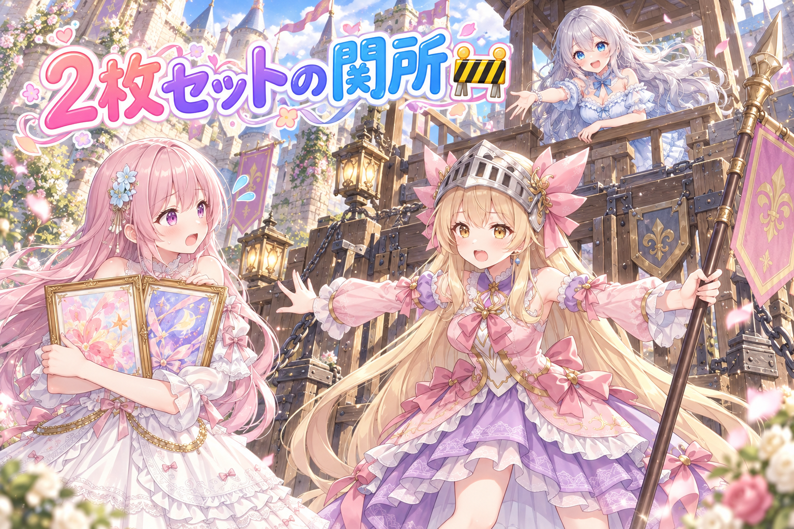

📌 3行まとめ
- 期限切れフォルダがレビューアプリにまだ出ていた問題を直し、期限切れの画像は全部「他サイト投稿用」にまとめるルールに統一
- A/Bテスト用の2枚が残ったままの枠は、どの出荷ルートからも出さない関所を追加。XのAPIを使い始め、投稿の確認と自分の投稿の数字読みはAPI、投稿そのものはブラウザ予約に戻した
- 検査の仕組みが「何件見たか」を必ず表示するよう整備し、「0件しか見ていないのに合格」になる穴をふさいだ

ルピナス （笑顔）
こんばんは、AIBSの時間です。今日は秋の夜長にぴったり、ちょっと理屈っぽい回をお届けしますね。

アイリス （大笑い）
前回はまとめて片付けボタンを作ったのに、今日はその片付けたはずの棚がまた出てきたんだよね、お姉ちゃん！

ルピナス （呆れ）
アイリス、いきなりやらかしから言わないの。……まあ、事実だから最初にやるんだけど。

フィオナ （ふつう）
そのあとは、関所づくりと、新しい鍵のお話と、検査のお作法です。最後は一問一答もありますよ。
1. 👀 今日のやらかし：消えたはずの期限切れフォルダ
イベント向けに作った画像のうち、締め切りを過ぎたものは「期限切れ」として別の棚に入れていました。ところが、少し前に「期限切れの棚はなくして、全部『他サイト投稿用』に混ぜる」とルールを決めていたのに、レビューアプリでイベントと日付を選ぶ画面には、まだ期限切れの棚が顔を出していました。ルールと実装がずれていたので、アプリ側から期限切れの棚をなくし、ルールに合わせる形に直しました。

アイリス （びっくり）
見て見て、日付の一覧に「期限切れ」ってまだいる！ おばけ？

ルピナス （ふつう）
おばけじゃなくて、決めたことを画面に反映し忘れてただけ。ルールは紙に書いたのに、看板を外してなかったのね。

アイリス （考え中）
じゃあ看板だけ外せばいいじゃん。ぺりっと。

フィオナ （あわあわ）
だめです、アイリスちゃん。看板だけ外したら、中の画像がどこにも行けなくなっちゃいます。

アイリス （無表情）
……迷子の画像、倉庫で一生体育座り？
ルピナス （笑顔）
そうならないように、看板を外すのと一緒に、中身を他サイト投稿用の棚へ引っ越しさせるの。棚ごと片付けないと意味がないんだよね。

フィオナ （笑顔）
「期限切れ」は捨てる場所じゃなくて、第二の出番を待つ場所、というのが今のルールですからね。

アイリス （ドヤ顔）
なるほどね。じゃあ、あたしの去年の黄色いショートパンツも「期限切れ」じゃなくて「第二の出番待ち」ってこと！

ルピナス （大笑い）
あれは今朝、自分で「きっつ！」って言ってたでしょう。画像と違って、サイズは引っ越しても戻らないんだよね。
📝 ポイント（初心者向け解説・技術メモ・まとめ）
- 初心者向け解説：お部屋のルールを「古い服は寄付箱へ」に変えたのに、クローゼットに「古い服」の札が残っていたら、また古い服がそこに溜まっちゃいますよね。決めたルールは、札（画面）と中身（データ）の両方を一緒に変えるのがコツです🧺
- 技術メモ：仕様変更のあとは、UIの選択肢・フォルダ構成・既存データの移し替えの3点をセットで確認する。UIだけ直すとデータが孤立し、データだけ移すとUIに空の選択肢が残る。
- ひとことまとめ：ルールを変えたら、画面とデータを同時に引っ越す。
2. 2枚残ったままの絵は、どこからも出さない

画像の見せ方を比べるために、同じ枠でA案とB案の2枚を用意することがあります。本来はどちらか1枚に絞ってから投稿するのですが、2枚残ったままの枠が、出荷ルートによってはそのまま流れてしまう可能性がありました。そこで「2枚残っている枠は、どの出口からも出さない」という関所を、承認・出荷・予約・仕上げなど全ての出荷ルートに付け、2枚かどうかの判定も1か所にまとめました。わざと複数枚で出したい場合だけは、専用の印を置いたときに通す例外にしていますが、A/Bの組は例外なしです。

アイリス （怒り）
止まれーっ！ そこの2枚持ってる人、通さないよ！

フィオナ （びっくり）
えっ、私ですか？ ちゃんと額縁に入れて、きれいに並べてきたのですが……。
アイリス （ドヤ顔）
規則により、2枚セットのままは通せません。どっちか1枚にしてから出直してきてください。
ルピナス （笑顔）
残念、裏門にも表門にも、予約の窓口にも同じ門番がいます。今日、出口を全部回って置いてきたの。

フィオナ （衝撃）
全部の出口に！？ それはもう、お城ごと包囲されてますね……。
アイリス （考え中）
でもお姉ちゃん、門番いっぱいいたら、門番ごとに言うこと違ったりしない？

ルピナス （びっくり）
アイリス、いいところに気づいたよね。実はそこが大事で、「2枚かどうか」を判断する頭脳は1人だけにして、各門番はその1人に聞きに行く形にしたの。
フィオナ （笑顔）
判定がバラバラだと、ある門は通して別の門は止める、ということが起きますものね。
アイリス （大笑い）
よし、じゃあ門番のあたしは頭脳さんに聞いてきまーす！ ……フィオナ、2枚って何枚だっけ？

フィオナ （呆れ）
アイリスちゃん、門番さんが頭脳さんに聞く前に、数え方から聞いちゃうんですか。
📝 ポイント（初心者向け解説・技術メモ・まとめ）
- 初心者向け解説：お城の門がいくつあっても、「怪しい人リスト」を持つのは1人の隊長だけ。門番さんはみんな隊長に確認しに行くので、どの門でも同じ判断になります🏰
- 技術メモ：出荷経路が複数ある場合、ガードは全経路に置き、判定ロジックは単一モジュールに集約する。例外（意図的な複数枚投稿）はフラグファイルなど明示的な印でのみ許可し、A/Bペアは例外対象から外す。逆テスト（2枚残りを流して止まることを確認）も用意。
- ひとことまとめ：関所は全部の出口に、判断する頭脳は1つに。
3. X の公式APIデビュー、でも投稿はブラウザへ
今日はXの開発者登録をして少額のクレジットを入れ、公式APIが使えるようになりました。途中でアプリの権限を「読み取りのみ」から「読み書き」に変える必要もありました。ただ、APIは使った分だけお金がかかる仕組みなので、どこに使うかを一つずつ見直しました。結果として、投稿は自分の投稿がちゃんと出たかをAPIで確かめる仕組みと、自分の投稿の反応を公開から48〜72時間後に1回だけ読む仕組みをAPIで作り、投稿そのものは料金を確認したうえで元のブラウザでの予約投稿に戻しました。

アイリス （笑顔）
ついに公式の鍵をもらったよ！ これで投稿も全部APIでシュバッとやろう！

フィオナ （考え中）
私は慎重派です。使った分だけお金がかかるなら、ブラウザでできることはブラウザのままがいいと思います。
アイリス （怒り）
えー！ せっかくの鍵なのに、飾っておくだけ？
フィオナ （ふつう）
飾るのではなく、ここぞという扉だけ開けるんです。たとえば「本当に投稿できたか」の確認は、画面を目で見るより確実ですよね。
アイリス （考え中）
うーん、それは確かに。画面だと、出てないのに出た気になってたことあるもんね。
ルピナス （笑顔）
じゃあ裁定します。確認と、自分の投稿の数字読みはAPI。投稿そのものはブラウザの予約に戻す。実は一度、投稿もAPIで出せるように組んだんだけど、料金を聞いてから戻したの。
アイリス （びっくり）
組んだのに戻したの！？ もったいなくない？
ルピナス （ふつう）
切り替えのスイッチは残してあるから、いつでも戻せるんだよね。作ったものは捨ててないわ。
フィオナ （笑顔）
数字を読むのも、48〜72時間後に1回だけ、と決めたのがいいですね。毎時間のぞいていたら、お財布が泣いちゃいます。
アイリス （ドヤ顔）
つまり鍵は、冷蔵庫のプリンと同じ！ 3日待ってから1回だけ開ける！
ルピナス （呆れ）
プリンは3日も待ったら危ないから、それだけはやめてね。
📝 ポイント（初心者向け解説・技術メモ・まとめ）
- 初心者向け解説：タクシーは便利だけど、近所のお買い物まで毎回乗ったらお財布が大変。大事な確認のときだけタクシー（API）、いつもの道は歩き（ブラウザ）、と使い分けるイメージです🚕
- 技術メモ：従量課金APIは用途ごとに費用対効果を見る。投稿確認（verify）と自分の投稿のメトリクス取得（公開後48〜72hに1回）をAPI化、投稿はブラウザ予約に戻し、設定ファイルでモード切り替え可能にした。書き込み系を使う場合はアプリ権限をRead and Writeに変更する必要がある。
- ひとことまとめ：APIは全部置き換えるより、確実さが欲しい所だけに。
4. 「0件見て合格」をなくす検査のお作法
このシステムには、投稿文や画像をチェックする検査の仕組みがたくさんあります。でも、何かの理由で1件も調べられなかったとき、「問題は0件でした＝合格」と表示されてしまうと、実は何も見ていないのに安心してしまいます。そこで今日は、検査が必ず最後に「何件見たか」を1行で出すようにそろえ、0件のときは原則として警告にしました。あわせて、投稿できたかの確認でXへの確認が失敗したときは、合格ではなく赤で知らせる形に直しています。
ルピナス （笑顔）
クイズです。検査の結果が「問題0件、合格！」でした。さて、安心していいでしょうか？
フィオナ （笑顔）
はい！ 0件ということは、完璧ということですので、お祝いにケーキを焼きます！

アイリス （衝撃）
フィオナがボケた！？ いつもの丁寧な解説どこ行ったの！

フィオナ （照れ）
……たまには、アイリスちゃんの席に座ってみたくて。
アイリス （ドヤ顔）
じゃあ今日はあたしが解説役ね！ 正解は、何件見たか分からないと安心できない、でしょ？ テストで0点じゃなくて、白紙で出して採点されてない、みたいな！
ルピナス （びっくり）
アイリス、正解。しかも例えが上手。白紙なのに「間違い0個」って書かれてたら、合格に見えちゃうんだよね。
フィオナ （ふつう）
ですから、最後に「〇件見ました」と必ず言わせるんですね。0件なら、それ自体が怪しいサインになります。
アイリス （考え中）
でもさ、ほんとに0件が正しい日もあるんじゃない？
ルピナス （ふつう）
そういう検査だけは、0件でも大丈夫って印を付けて許可するの。黙って通すんじゃなくて、分かったうえで通すのが大事。

ルピナス （しょんぼり）
それと、今日は夜通しで作業が続いて、GPUもずっと動きっぱなしだったでしょう。検査は何件でも見せられるけど、人間は何時間でも起きていられるわけじゃないからね。ちゃんと休んで、お水も飲んで。
フィオナ （笑顔）
では、焼く予定だったケーキは、ちゃんと寝て起きたあとのおやつにしましょう。
アイリス （大笑い）
よかった、ケーキは0件じゃなかった！
📝 ポイント（初心者向け解説・技術メモ・まとめ）
- 初心者向け解説：お掃除ロボットが「ゴミ0個でした！」と言っても、実は電源が入っていなかったら意味がないですよね。「何部屋まわったか」も一緒に教えてもらえば安心です🤖
- 技術メモ：検査スクリプトの末尾で検査対象数を必ず出力する共通関数（例：report_seen(n, what, ok_zero=False)）を用意し、ループ内でカウンタを増やす。n==0 はデフォルトで警告、0件が正当な検査のみ ok_zero=True で明示的に許可。外部確認が失敗した場合も「緑のまま何も見ていない」状態にせず赤にする。
- ひとことまとめ：検査は結果だけでなく、何件見たかまで報告させる。
5. 🎁 お楽しみコーナー：三姉妹に一問一答
今日の投稿にちなんで、常連リスナーさんから来そうな質問に3人がテンポよく答えます。
ルピナス （ふつう）
では一問目。「秋の食べ物、ひとつだけ選ぶなら？」
アイリス （笑顔）
焼き芋！ ……って言いたいけど、それお姉ちゃんの今日の答えじゃん！
ルピナス （笑顔）
私はりんご飴にも焼き芋にも出てたから、今日は選べないの。欲張りの特権です。
フィオナ （考え中）
私は栗です。皮をむくのに時間がかかるので、本を読みながら少しずつ食べるのが好きです。
ルピナス （ふつう）
二問目。「行ってみたい国は？」
フィオナ （笑顔）
世界地図を指でたどって、まだ決めきれていません。候補が多すぎて、地図が指の跡だらけです。
アイリス （ドヤ顔）
あたしは香水の国！ バラの花畑があるところ！
ルピナス （呆れ）
香水の国は、たぶん地図に載ってないよね。
ルピナス （ふつう）
最後の三問目。「寝る前にやっちゃうことは？」
アイリス （無表情）
天井の木目を数える！ ……で、いくつまで数えたか忘れる！

フィオナ （大笑い）
アイリスちゃん、それこそ「何件見たか」を報告しないとだめですね。
アイリス （衝撃）
まさか寝る前まで検査されるとは！

ルピナス （ウインク）
みんなも三姉妹に聞いてみたいこと、気軽にコメントで投げてみてね。次の一問一答で拾っちゃうかも！
6. 💐 今日のまとめ
- ルールを変えたら、画面の表示と中身のデータを一緒に引っ越すと迷子が出ない
- 出口が複数あるときは、全部の出口に関所を置き、判断する頭脳は1つにまとめる
- 有料のAPIは全部置き換えるより、確実さが欲しい所だけに絞ると使いやすい
- 検査は「問題0件」だけでなく「何件見たか」まで言わせて、白紙合格を防ぐ
みんなは、自分の作ったチェックが本当に動いているか、どうやって確かめてる？
💬 コメント
お名前とコメントだけで送れるよ（承認されるとみんなに表示されます🌸）
コメントを読み込み中…